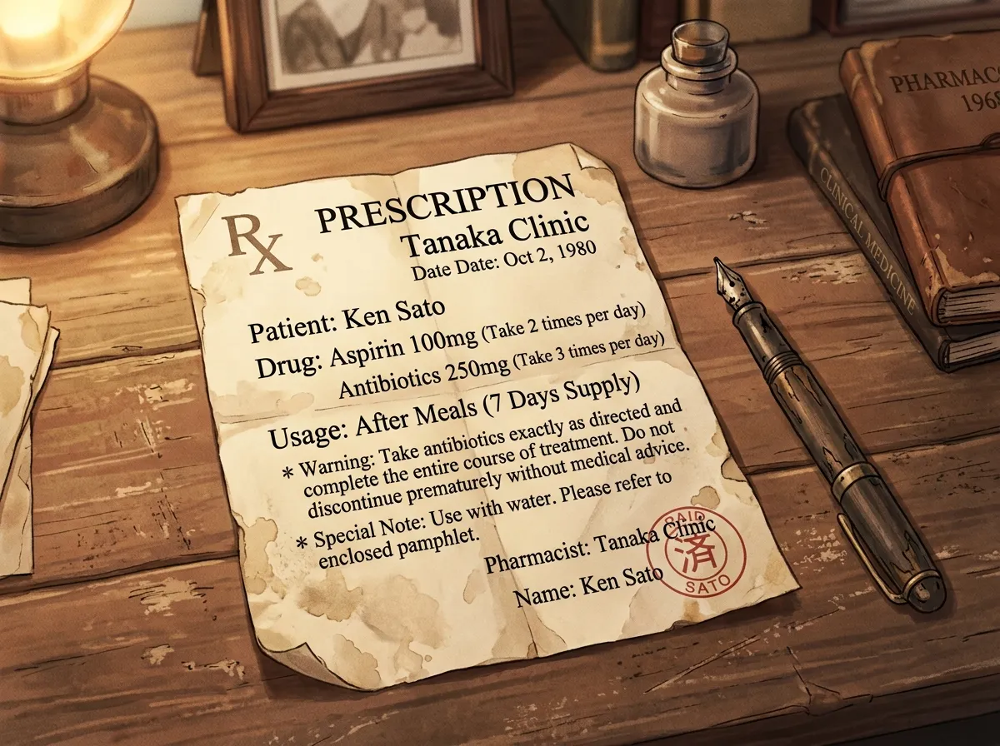
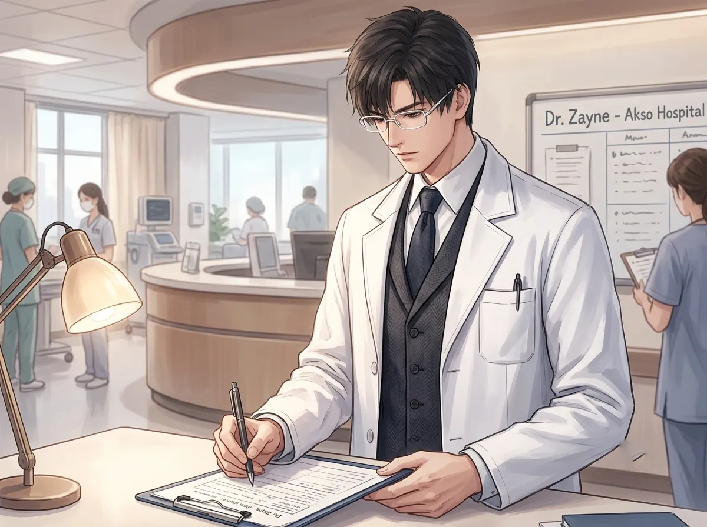
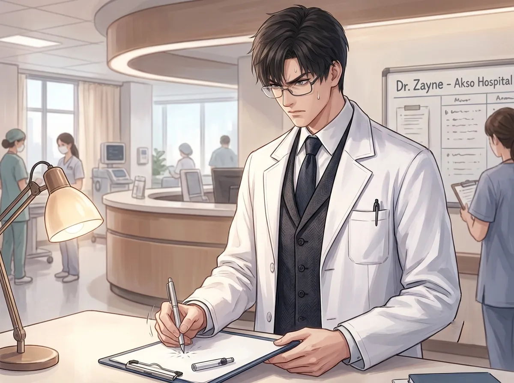
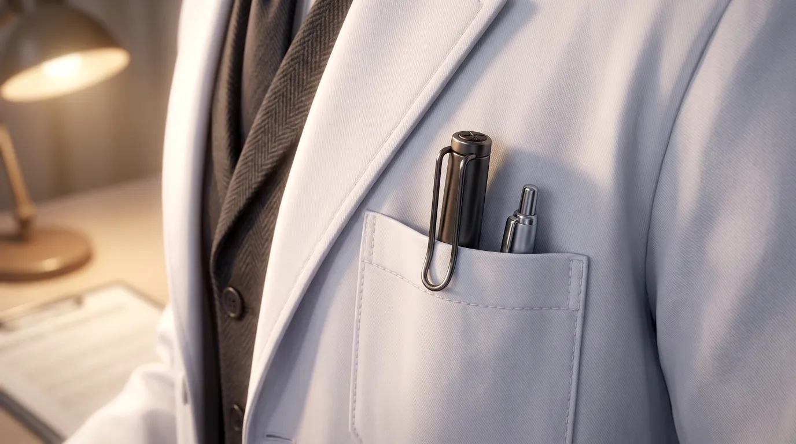
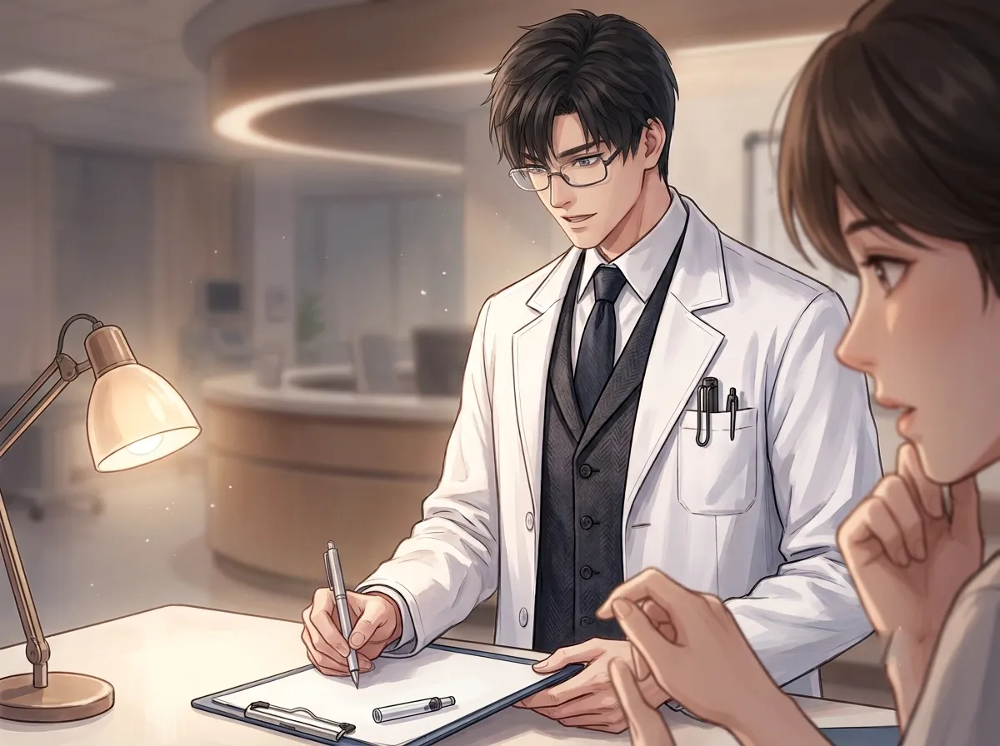

It doesn't write anymore. He still uses it. No one knows why.
He had a pen. A simple pen. Black. Plastic. Ordinary. The kind you could buy anywhere.
It was out of ink. It had been out of ink for years. It didn't write anymore. It couldn't write anything.
He still carried it. Every day. In the pocket of his white coat. The left pocket. The one closest to his heart.
People noticed. People asked. "Why don't you get a new one?" "That pen doesn't work anymore." "Are you going to replace that?"
He never answered. He never explained. He just kept the pen.
This is the story of that pen.

He bought the pen a long time ago. Before he was the doctor he is now. Before he had saved hundreds of lives. Before he had learned to keep everything inside.
He bought it on the first day of his residency. He needed a pen. He picked the cheapest one. He didn't think about it.
He used it to write his first prescription. A simple prescription. For a simple patient. A patient he still remembers.
That prescription was the first time he was a doctor. The first time he wrote down a decision that would help someone. The first time he felt like he mattered.
He didn't know that the pen would stay with him for all the years that followed. He didn't know that it would become the only thing he never replaced.
He bought it on the first day of his residency. A cheap pen. An ordinary pen. A pen that didn't matter.
He used it to write his first prescription. That prescription was the first time he was a doctor. The first time he wrote down a decision that would help someone.
He didn't know the pen would stay. He didn't know it would become the most important pen he ever owned. He only knew that he couldn't throw it away.

The pen saw everything. It saw him become a doctor. It saw him save lives. It saw him lose patients. It saw him stay up all night. It saw him walk out of surgery and sit in the dark.
It saw him at his best. It saw him at his worst. It saw him when he was tired. It saw him when he was broken. It saw him when he was everything and nothing all at once.
It was there for every prescription. Every note. Every chart. Every signature. Every word he wrote down to help someone.
The pen saw everything. It was the only thing that saw everything. The only thing that stayed.
He has been through a lot. He has saved lives. He has lost patients. He has carried the weight of everything.
The pen was there for all of it. The pen saw everything. The pen watched him become the person he is today.
It is the only thing that has been with him through everything. The only thing that has seen him at his best and his worst. The only thing that knows who he really is.

One day, it stopped writing. He didn't notice at first. He was writing a prescription. He was focused. He was in the middle of something important.
Then the ink stopped. The pen stopped making marks. The paper stayed blank. He tried again. Nothing. He shook it. Nothing. He tried a different angle. Nothing.
He looked at the pen. He looked at the blank paper. He looked at the pen again.
He could have thrown it away. He could have gotten a new one. He could have done the reasonable thing.
He put it back in his pocket. He got a new pen. He finished the prescription. He kept the old pen.
He didn't know why. He just couldn't throw it away.
It stopped writing. It ran out of ink. It was useless. It couldn't do anything anymore.
He could have thrown it away. He could have gotten a new one. He could have let it go.
He didn't. He couldn't. He put it back in his pocket. He kept it. He will always keep it.
Because the pen was not about writing. The pen was about everything that came before. The pen was about the person he used to be. The pen was about the person he still is.

He replaces everything. He replaces his shoes when they wear out. He replaces his coat when it gets old. He replaces his equipment when it stops working.
He never replaces the pen.
It sits in his pocket. Every day. It doesn't write. It doesn't do anything. It just sits there. And stays.
People ask him why. People tell him it's strange. People tell him he should get a new one. He never listens. He never explains.
He just keeps the pen. In his pocket. In his white coat. In the left pocket. The one closest to his heart.
He replaces everything. His shoes. His coat. His equipment. Everything. Except the pen.
The pen stays. The pen is the only thing he never replaces. The pen is the only thing that stays the same.
He doesn't know why he keeps it. He doesn't know why he can't let it go. He only knows that it's the only thing that has been with him from the beginning. And that means something.

One day, she noticed the pen.
She didn't ask about it. She didn't mention it. She just looked at it. She looked at the worn plastic. The faded logo. The empty ink. She looked at the way he held it. The way he kept it. The way he never let it go.
She didn't say anything. She didn't need to. She understood.
She understood that the pen was important. She understood that it mattered. She understood that it was something he couldn't let go.
He didn't know why she understood. He didn't know how she understood. He only knew that she looked at the pen and she saw him.
She noticed the pen. She didn't ask. She didn't push. She just looked at it, and she understood.
She understood that the pen was important. She understood that it mattered. She understood that it was something he couldn't let go.
He didn't know why she understood. He didn't know how she understood. He only knew that she looked at the pen and she saw him.
She saw him. She saw the person who kept an empty pen because it meant something. She saw the person who couldn't let go of the past. She saw the person who was still carrying everything.
Zayne had a pen. A simple pen. Black. Plastic. Ordinary. A pen he bought on the first day of his residency.
He used it to write his first prescription. He used it for everything. He carried it through everything. He never replaced it.
It ran out of ink years ago. It doesn't write anymore. It doesn't do anything.
But he still carries it. In his white coat. In the left pocket. The one closest to his heart.
He doesn't need it to write. He needs it to remember. Remember who he was. Remember what he's done. Remember that he has been here. And that he is still here.
He will never replace it. He will never throw it away. He will carry it forever.